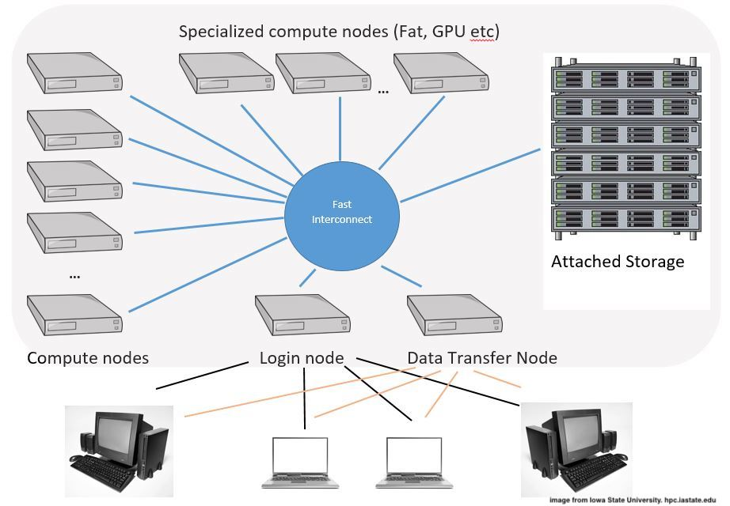

5 Sedna and SLURM intro
- SLURM stands for “Simple Linux Utility for Resource Management”
- It is the “queueing system” used to equitably provide compute resources on the Sedna HPCC.
5.1 Why do we need SLURM?
- The fundamental problem of cluster computing.
- A cluster does not operate like your laptop.
- Most compute-intensive jobs run most efficiently on a dedicated processor or processors.
5.2 HPCC Architecture in a Nutshell

- Nodes: the closest thing to what you think of as a computer. (“Pizza-boxes” with no displays).
- Each node is attached via a fast connection to centralized attached storage (A big set of hard drives attached via “Infiniband.”)
- Within each node are some numbers of Cores or CPUs
- Cores/CPUs are the actual processing units within a node. (Usually 20 to 24)
- Sedna, like almost all other HPCCs has a login node
- The login node is dedicated to allowing people to communicate with the HPCC.
- DO NOT do computationally intensive, or input/output-intensive jobs on the login node
- Not surprisingly, when you login to Sedna you are on the login node.
In the default configuration on Sedna, your command prompt at the shell tells you which node you are logged into. The default command prompt looks like:
[username@computer directory]So, for example, mine at the moment is:
[eanderson@sedna playground]$Which tells me that I am user eanderson and I am logged in to sedna in the directory whose basename is playground.
The login node for Sedna is named sedna. So, this is telling me that I am logged into the login node of Sedna.
Investigate your own command prompt and make sure you understand what the different parts in it mean.
5.3 Say it again: Don’t do heavy computing on the login nodes!
If you run a big job that is computationally intensive on the login node, it can interfere with other people being able to access the cluster.
Don’t do it!!
That is all fine and well, but how do we avoid computing on the login nodes?
5.4 Do your computation on the compute nodes
- To run jobs on the compute node you need to ask SLURM to give you “compute resources” to run the job.
- The basic axes of “compute resources” are:
- The number of cores to use.
- The maximum amount of RAM memory you might need.
- The amount of time that you will need those resources for.
- To prepare for the next part of the course, each one of us is going to “check out” 2 cores for 3 hours for interactive work.
- Interactive here means that we will have a Unix shell that has access to compute power on the cores that we checked out.
Here is the command to checkout 2 cores for 3 hours for interactive use:
Paste this into your shell
srun -c 2 -t 03:00:00 --pty /bin/bashHave a look at your command prompt now. It should show that you are logged in to nodeXX where XX is a number like 04 or 33.
5.5 What does Sedna have under the hood?
Sedna is not an outrageously large cluster, but it is well-maintained and provides a lot of computing power.
The nodes in Sedna are broken into three different partitions.
A partition is a collection of nodes that tend to be similar.
nodepartition: This is a collection of 36 nodes:node01–node28: “standard compute nodes”node29–node36: “standard compute nodes with twice as much memory”
himempartition: Four nodes with a boatload of memory for high-memory jobshimem01–himem04
bionodepartition: legacy machines from an older NWFSC cluster- I’m not sure if all of us have access to this.
- When I check, it seems like a lot of the nodes are down, occasionally.
- But I have been able to checkout resources on it.
- Might be an option, but it doesn’t perform at the same level as the
nodepartition
5.6 Ask SLURM about what nodes are available, and how busy they are
When I login to Sedna, before launching and jobs or working on anything, I always like to get a summary of how hard Sedna is currently working.
For this we have the sinfo command:
Type this at your command prompt
sinfoThe answer will look somethign like this:
PARTITION AVAIL TIMELIMIT NODES STATE NODELIST
node* up infinite 5 mix node[01,29-31,33]
node* up infinite 1 alloc node32
node* up infinite 30 idle node[02-28,34-36]
himem up infinite 1 mix himem01
himem up infinite 3 idle himem[02-04]
bionode up infinite 8 down* bionode[10-11,13-18]
bionode up infinite 1 drain bionode12
bionode up infinite 10 idle bionode[01-09,19]This is a hugely informative summary for being so compact.
- The output is sorted by partition.
- Within each partition it tells us how many nodes are in different states:
- The main states:
idle: just sitting there with all cores available for checkout,mix: some, but not all, cores are checkout out and in use,alloc: all the cores on the node are checkout out and in use.
- Other states you might see:
down: node is unavailable because it is not working properly,drain: node is not available because the sys-admins are not letting any new jobs to start because they are going to be working on the system soon, etc.
- The
nodepartition is starrednode*because it is the default partition. - Notation like
node[01,29-31,33]gives the specific node numbers, compactly.
Review how many nodes are currently in use.
5.7 More detailed sinfo output
Sometimes you want more information about what is going on with the cluster. sinfo can do that, too, but the syntax is hard to remember and even harder to type.
Here is a bash function we will define called slinfo for (s-long-info) that uses sinfo to provide more detailed output.
Paste this into your shell
function slinfo {
sinfo -N -O nodelist,cpusstate,memory,allocmem
}Once you have done that:
Type this at your command prompt
slinfoThis gives information about each node.
- In
CPUS(A/I/O/T):- A = allocated
- I = idle
- O = offline
- T = total
MEMORYis total RAM available on the node (in Megabytes)ALLOCMEMis the total RAM allocated to jobs.
5.8 Summarize what Sedna is doing by job
SLURM keeps track of individual jobs that get submitted.
For SLURM, each job is basically a request for resources.
If SLURM finds the requested resources are available, it provides the resources and starts the job.
If resources are not available because other jobs are running, the reqested job enters the “queue” in a WAITING state.
We can see how many jobs are running and how many are waiting, by using the SLURM squeue command:
(By the way, notice the pattern? All SLURM command start with an s).
Type this at your command prompt
squeueThis tells us a little about all the jobs that are currently allocated resources or are waiting for resources.
One thing to note: - Every job is assigned a SLURM_JOB_ID. Which is a unique integer (that gets assigned successively). - And jobs might have a job NAME, that is assigned by the user of is the name of the script that the job runs.
5.9 I find the standard squeue output lacking
The standard way that squeue presents information is not super informative, especially if the job names are not very short.
Once again, we make a bash function, alljobs, that runs squeue but provides more information.
Paste this at your command prompt
function alljobs {
if [ $# -ne 1 ]; then
JL=10;
else
JL=$1;
fi;
squeue -o "%.12i %.9P %.${JL}j %.15u %.2t %.15M %.6D %.18R %.5C %.12m %.12l %.12L";
}Also, if you follow the command with an integer like 20, that is how many spaces the output will allow for the job NAME.
For example, try:
Type this at the command prompt
alljobs 305.10 Just tell me about my jobs!
We can make a similar function that only tells us about our own jobs that are running or waiting in the queue:
Paste this into your terminal
function myjobs {
if [ $# -ne 1 ]; then
JL=10;
else
JL=$1;
fi;
squeue -u $(whoami) -o "%.12i %.9P %.${JL}j %.10u %.2t %.15M %.6D %.18R %.5C %.12m %.12l %.12L %p";
}You can run that the same way as alljobs, and you should see the 2-core job you started with srun:
Type this into your shell
myjobs5.11 Finding Software on a Cluster
- Analysis software is not automatically available on a cluster
- On many clusters you have to install it yourself
- On Sedna, we are very lucky to have a great support crew that will install software for us, and also make it available for everyone else to use.
However, software can be complicated:
- Some software might conflict with other software.
- Some users might want different software versions
The solution: maintain software (and its dependencies) in (somewhat) isolated modules.
Here we check to see if the bioinformatics paths are in the MODULEPATH:
Paste this in your shell
echo $MODULEPATH | grep bioinformaticsIf that command did not return anything to stdout, then you need to add a command to your ~/.bashrc that will add /opt/bioinformatics/modulefiles to your MODULEPATH. You can do that (as detailed in the Sedna Google Doc) like this:
If you need to, paste this into the shell
echo 'export MODULEPATH=${MODULEPATH}:/opt/bioinformatics/modulefiles' >> ~/.bashrcAnd when you are done with that, reload your .bashrc to get the change to take effect:
If you need to, paste this into the shell
source ~/.bashrc5.12 Example: Let’s try running samtools
samtools is a common bioinformatic utility.
Typically, if you run it with no arguments, it gives you some usage information.
However, on Sedna, unless you have installed samtools yourself, or have set your environment up to always have it available, when you type samtools at the shell, you will get a response saying that it is not available:
Type this at the command prompt
samtoolsThe response I get from the computer is:
bash: samtools: command not found...
Install package 'samtools' to provide command 'samtools'? [N/y]You should get that response, and please answer N to the question.
You do not want to install samtools.
Instead, you want to see if it is available in the system modules.
5.13 Check which software programs are available in the modules
The command module and its subcommands let you interact with the software modules.
module avail tells you what software is available in the modules.
Type this into your shell
module availThere is a lot of tasty bioinformatics software there. (A nice change from HPCC’s that primarily serve geoscientists…)
The numbers are the version numbers. The (D) after some of them tells us that version is the default.
5.14 Load the samtools module
We will load the module for version 1.15.1 of samtools. That can be done like this:
Paste this into your shell
module load bio/samtools/1.15.1(using the load subcommand of module)
The same would have been achieved with
module load bio/samtoolsbecause 1.15.1 is the default samtools version.
Nonetheless, it is typically best from a reproducibility standpoint to be explicit about version numbers of software you are using.
Now, that it is loaded, you can run the samtools command and get the usage message.
Type this at your shell
samtoolsTo know which modules you have loaded:
module listTo unload all the modules you have loaded
module purgeThere are many more module commands, but those are the only ones that you really need to know.
5.15 Two notes about modules
If you open a new shell, or allocate an interactive session on a new core, or logout and log back in again…
…You will have to reload the modules that you need.
So: Any time you write a script that needs some software, you should load the module for that software in the initial lines of the script.
Not every cluster that you use will have the same modules set up in the same way. (Though it does seem that Giles has set out modules up according to the accepted best practices!).
So, if you use code you developed for Sedna on another cluster, you might have to modify things to ensure that software is available.
The conda package manager is an option if you are going to be running your scripts on different clusters.
5.16 If you need more software or newer versions on Sedna
You can request software installations by using the Sedna work request form
5.17 Before we go, make our convenience functions available whenever we are on Sedna
We defined three convenience functions in bash: slinfo, alljobs, and myjobs.
Once we log out of the current session, or login to a different session, those convenience functions will be lost.
To make sure that they are accessible the next time we login, we will put them into our own .bashrc files.
The .bashrc file is a file in your home directory in which you can put function definitions and other configurations that will be applied whenever you open a new bash shell.
To add our three convenience functions to your .bashrc file, first start editing your ~/.bashrc file with nano.
Paste this into your shell
nano ~/.bashrcThen come back to this web page and copy the following text:
Copy this onto your clipboard
function slinfo {
sinfo -N -O nodelist,cpusstate,memory,allocmem
}
function alljobs {
if [ $# -ne 1 ]; then
JL=10;
else
JL=$1;
fi;
squeue -o "%.12i %.9P %.${JL}j %.15u %.2t %.15M %.6D %.18R %.5C %.12m %.12l %.12L";
}
function myjobs {
if [ $# -ne 1 ]; then
JL=10;
else
JL=$1;
fi;
squeue -u $(whoami) -o "%.12i %.9P %.${JL}j %.10u %.2t %.15M %.6D %.18R %.5C %.12m %.12l %.12L %p";
}Then paste those function definitions into the editor at the bottom of the file (or before your conda block if you have one), and then do cntrl-X, Y, RETURN to save the file and get out of nano.
Now, the next time you login you will have all those functions.